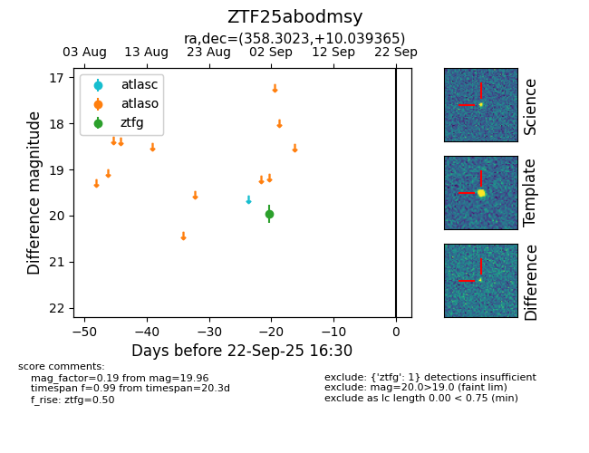

FINK: ZTF25abodmsy
Lasair: ZTF25abodmsy
ALeRCE: ZTF25abodmsy
ZTF25abodmsy (ztf,fink)
equatorial (ra, dec) = (358.3023,+10.03936)
galactic (l, b) = (100.1653,-50.24069)

last ztfg=19.96
1 ztfg detections